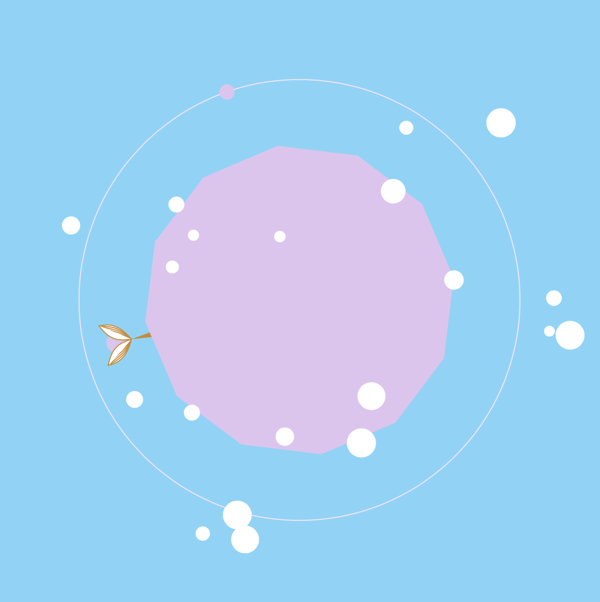
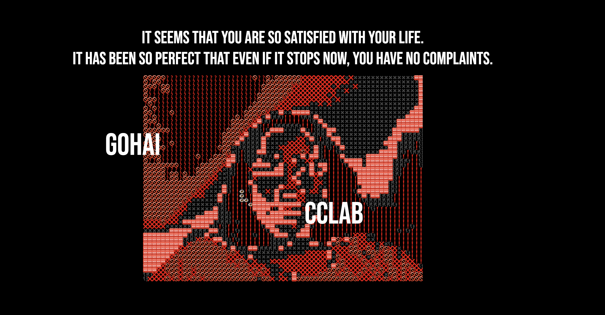
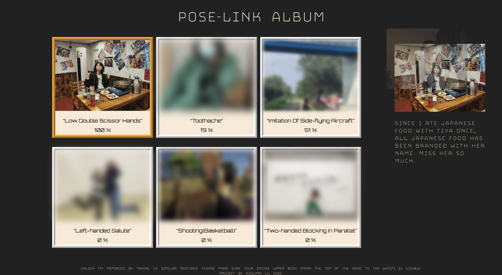

Aislynn's portfolio:
J planet
J Planet is a planet with a unique character. When you first meet it, it will generate random colors and shapes for you.
It warmly welcomes any particles that its little collector touches. Once a particle is
accpeted by J planet, you are welcome to interact with it.
Although J planet is very friendly, it has a limited capacity to bear. Therefore, too many particles can drive the J planet crazy and even make it flip out. Don’t be scared! Once the excess particles are sent away, it will be calm again.
There is also a flower called “SL”, who initially grows as a bud suspended in the universe. Interact with it, you may see the blossom of both the SL Flower itself and its friendship with J planet. Can you find a way to keep their friendship forever?
J planet is a planet that belongs to the fantasy world. But at the same time, it is like us in life. Always welcoming and trying new things, and always being overwhelmed by too many chores. There are always interesting people we meet, who we had a good conversation with, leave without even knowing it. However, I still hope that you can relax when you are playing with J planet. “SL Flower” is the very symbol of “seize or let it go”. Seize what we have and let go of what left us.
Although J planet is very friendly, it has a limited capacity to bear. Therefore, too many particles can drive the J planet crazy and even make it flip out. Don’t be scared! Once the excess particles are sent away, it will be calm again.
There is also a flower called “SL”, who initially grows as a bud suspended in the universe. Interact with it, you may see the blossom of both the SL Flower itself and its friendship with J planet. Can you find a way to keep their friendship forever?
J planet is a planet that belongs to the fantasy world. But at the same time, it is like us in life. Always welcoming and trying new things, and always being overwhelmed by too many chores. There are always interesting people we meet, who we had a good conversation with, leave without even knowing it. However, I still hope that you can relax when you are playing with J planet. “SL Flower” is the very symbol of “seize or let it go”. Seize what we have and let go of what left us.

Sudden
Sudden: A Story About Facing Deadly Threat is an interactive article. It is a four-page story about “you” who suddenly encounters a shooting during a trip.
Users can “hover” to read parts of the story and participate in the storyline by clicking, dragging the mouse, and answering questions. There are some sudden sound effects and images in the story, which are designed to give the user a sense of fright from the sudden threat.
The story wants to express two ideas. The first is that something horrible or significant may just come out of nowhere. It has no warning. Seconds before you may be doing a very small and normal thing, such as opening an umbrella. Seconds later it comes. The second point is to reveal the mental state of facing the sudden threat of death. This may answer people’s curiosity or relieve them of the psychological burden of the deceased. Humans are surprisingly adaptable, even to death.
Users can “hover” to read parts of the story and participate in the storyline by clicking, dragging the mouse, and answering questions. There are some sudden sound effects and images in the story, which are designed to give the user a sense of fright from the sudden threat.
The story wants to express two ideas. The first is that something horrible or significant may just come out of nowhere. It has no warning. Seconds before you may be doing a very small and normal thing, such as opening an umbrella. Seconds later it comes. The second point is to reveal the mental state of facing the sudden threat of death. This may answer people’s curiosity or relieve them of the psychological burden of the deceased. Humans are surprisingly adaptable, even to death.

Pose-Link Album
Pose-Link Album: Memories Sharing Through Poses is an album that exists on a web page and simulates the future of sharing albums.
It is based on the idea that future memories are stored in the pictures in sharing albums. Only when the user’s pose is the same as the image in the album, the user can “unlock” the image to see the clear image and the memory associated with it.
I hope that by doing the same poses to unlock the memories, users can experience the connection they have with the album owner through shared memory(which is represented by same poses).
On top of that, I also want to express that machine learning models can be biased. They may learn incorrectly, draw wrong conclusions, and give incorrect labels. Therefore, in order to show the bias and to give the user some hints about the pose, I attached labels to photos. These labels are simulated labels that the future shared album machine learning model may label wrongly for the picture.
It is based on the idea that future memories are stored in the pictures in sharing albums. Only when the user’s pose is the same as the image in the album, the user can “unlock” the image to see the clear image and the memory associated with it.
I hope that by doing the same poses to unlock the memories, users can experience the connection they have with the album owner through shared memory(which is represented by same poses).
On top of that, I also want to express that machine learning models can be biased. They may learn incorrectly, draw wrong conclusions, and give incorrect labels. Therefore, in order to show the bias and to give the user some hints about the pose, I attached labels to photos. These labels are simulated labels that the future shared album machine learning model may label wrongly for the picture.
